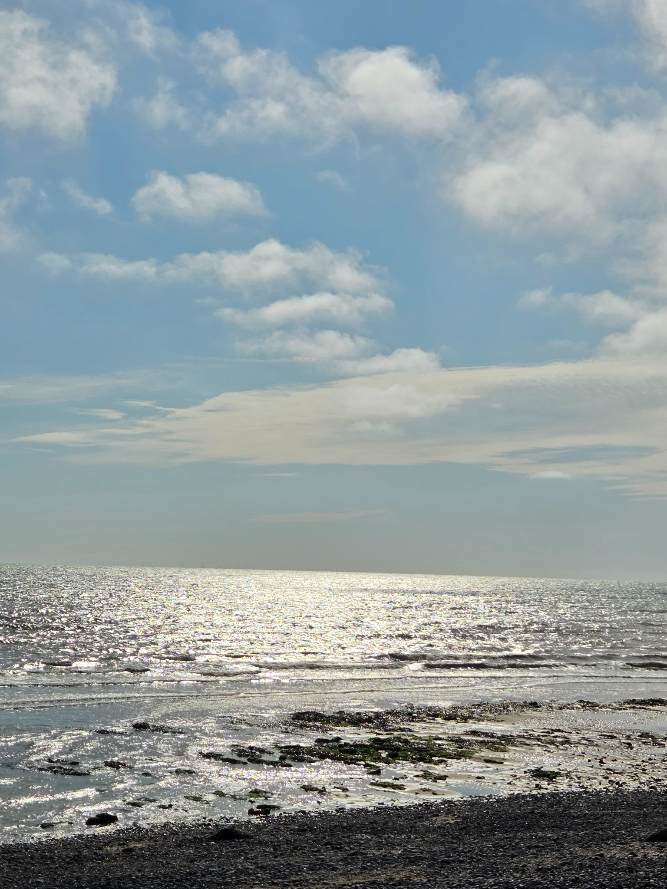
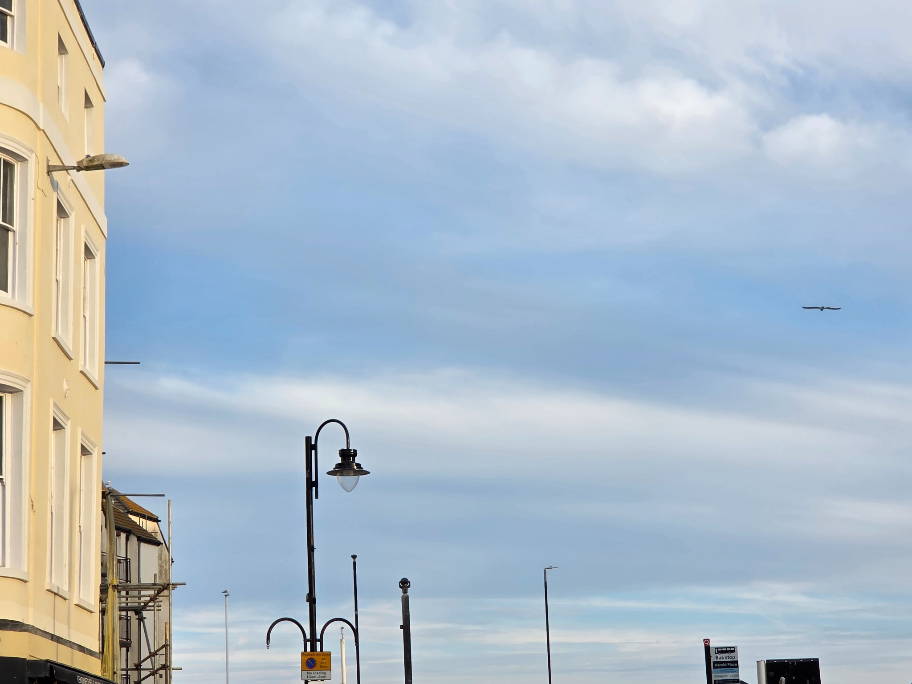
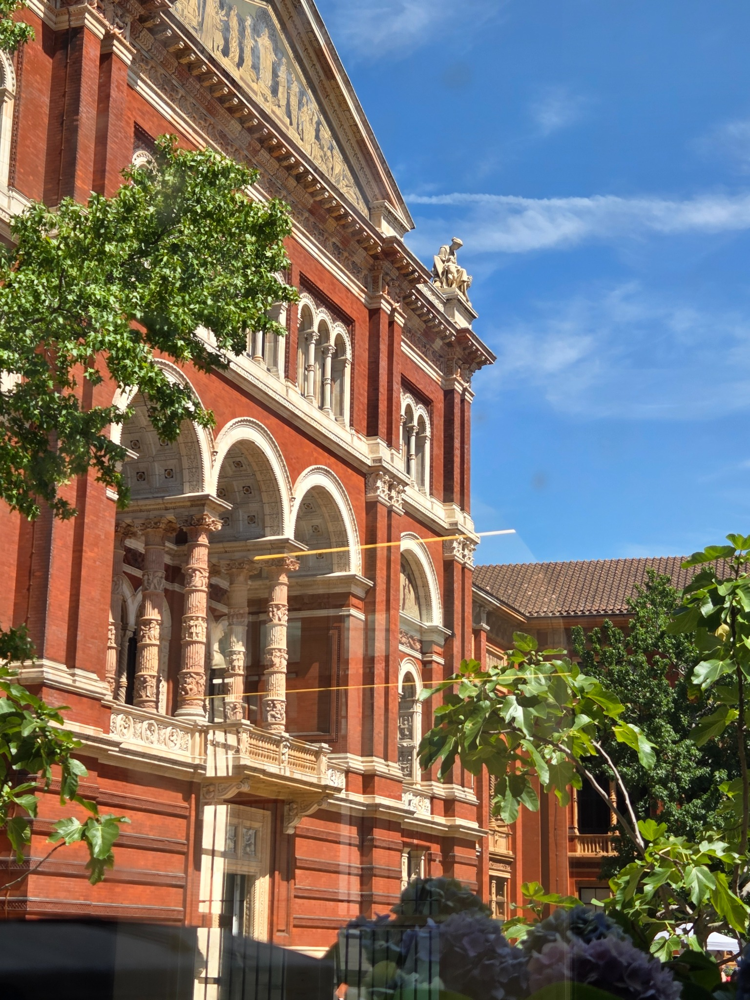
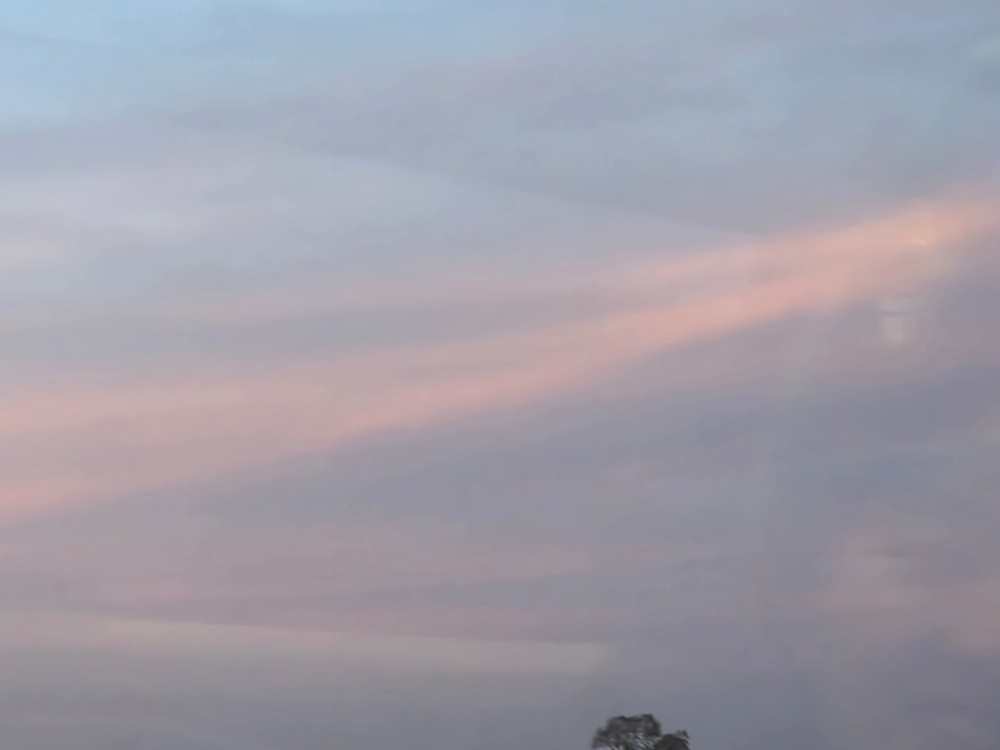
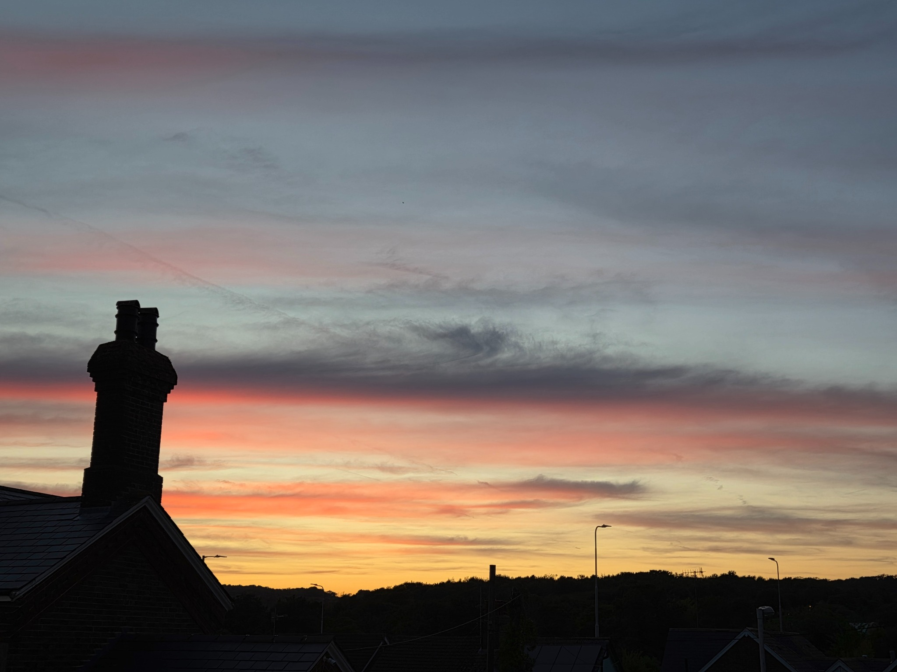

Personal / Photo journal
Places I keep
coming back to.
A small collection of skies, coastlines, and city details I noticed along the way. Soft blue light, warm stone, and a little room to breathe.
A personal page, gathered from photographs I took myself.
A few moments
Light, place, and passing time
Photographs from my own camera roll · faces kept out of view




